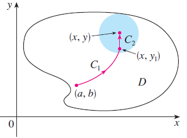
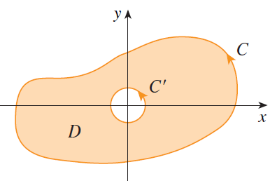
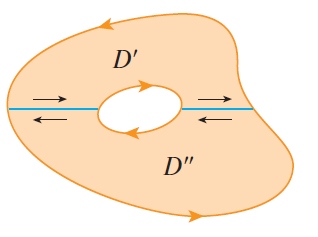

CÁLCULO VETORIAL · AULAS 51–55
Campos conservativos, rotacional, divergente e Teorema de Green
Campos conservativos, funções potenciais, independência do caminho, Teorema Fundamental das Integrais de Linha, Teorema de Green, rotacional e divergente. Esses conceitos conectam propriedades locais de um campo vetorial ao seu comportamento global ao longo de curvas e regiões.
1. Campos conservativos
Seja \(\mathbf F\) um campo vetorial definido em uma região \(D\). Dizemos que \(\mathbf F\) é um campo vetorial conservativo quando existe uma função escalar \(f\) tal que
A função \(f\) é chamada de função potencial de \(\mathbf F\).
Em duas variáveis, se
então
Portanto, para que \(\mathbf F=\nabla f\), devemos ter
2. Como encontrar uma função potencial?
Considere o campo
Para encontrar uma função potencial \(f\), devemos ter
e
Integrando a primeira equação em relação a \(x\),
em que \(g(y)\) representa uma função que não depende de \(x\).
Derivando essa expressão em relação a \(y\),
Comparando com a segunda componente do campo,
Logo,
Podemos tomar como função potencial
3. Teorema Fundamental das Integrais de Linha
O principal benefício de reconhecer um campo conservativo aparece no cálculo das integrais de linha.
Teorema Fundamental das Integrais de Linha. Se
e \(C\) é uma curva que começa em \(A\) e termina em \(B\), então
Em duas variáveis, se \(A=(x_1,y_1)\) e \(B=(x_2,y_2)\),
Em três variáveis, se \(A=(x_1,y_1,z_1)\) e \(B=(x_2,y_2,z_2)\),
Portanto, quando conhecemos uma função potencial, a integral pode ser calculada sem a necessidade de parametrizar toda a trajetória.
4. Exemplo do Teorema Fundamental
Para
encontramos a função potencial
Considere qualquer curva \(C\) ligando \(A=(0,0)\) a \(B=(1,2)\).
Pelo Teorema Fundamental,
5. Independência do caminho
Se \(\mathbf F\) é conservativo, a integral de linha depende apenas dos pontos inicial e final.
Se \(C_1\) e \(C_2\) são dois caminhos com os mesmos extremos, então
Uma forma de construir uma função potencial é fixar um ponto \((a,b)\) no domínio e definir
em que \(C\) é qualquer caminho no domínio ligando \((a,b)\) a \((x,y)\).
Como a integral é independente do caminho, o valor de \(f(x,y)\) não depende da trajetória escolhida.

6. Campos conservativos e curvas fechadas
Se \(C\) é uma curva fechada, o ponto inicial coincide com o ponto final.
Assim, para um campo conservativo,
Consequentemente,
Fisicamente, isso significa que o trabalho realizado por um campo de força conservativo ao mover um objeto ao redor de uma trajetória fechada é zero.
7. Um teste para campos conservativos no plano
Considere
Se \(\mathbf F=\nabla f\), então
Sob as condições adequadas de continuidade das derivadas,
e
Portanto,
Em uma região simplesmente conexa, se \(P\) e \(Q\) possuem derivadas parciais de primeira ordem contínuas e
então o campo é conservativo.
Atenção ao domínio. A igualdade \(P_y=Q_x\), isoladamente, não deve ser utilizada sem verificar as hipóteses sobre o domínio. A topologia da região é relevante para a recíproca.
8. Teorema de Green
O Teorema de Green estabelece uma relação entre uma integral de linha ao redor de uma curva fechada e uma integral dupla sobre a região plana delimitada por essa curva.
Seja \(C\) uma curva plana simples, fechada, contínua por partes e orientada positivamente, e seja \(D\) a região delimitada por \(C\).
Se \(P\) e \(Q\) possuem derivadas parciais de primeira ordem contínuas em uma região aberta que contém \(D\), então
Se
então
9. Orientação positiva
A orientação da curva é parte das hipóteses do Teorema de Green.
Para uma região simples, a orientação positiva da fronteira corresponde ao sentido anti-horário. Ao percorrer a curva nesse sentido, a região permanece à esquerda.
Em regiões com uma fronteira interna, a mesma regra continua válida: cada componente da fronteira deve ser percorrida de modo que a região permaneça à esquerda.

10. Regiões com furos e decomposição
Quando a região possui um furo, ela pode ser decomposta em sub-regiões para permitir a aplicação do Teorema de Green.

Essa construção mostra por que o teorema pode ser estendido a regiões que não são simplesmente conexas, desde que as orientações das diferentes componentes da fronteira sejam tratadas corretamente.
11. O que o Teorema de Green relaciona?
O lado esquerdo,
é uma integral calculada sobre a fronteira da região.
O lado direito,
é calculado sobre todo o interior da região.
Essa estrutura lembra o Teorema Fundamental do Cálculo:
Em uma dimensão, integramos uma derivada no interior de um intervalo e obtemos uma informação sobre sua fronteira. Green estabelece uma relação análoga em duas dimensões.
12. Exemplo de aplicação do Teorema de Green
Considere
em que \(C\) é a fronteira positivamente orientada da região \(D\) dada por
e
Temos
e
Portanto,
e
Pelo Teorema de Green,
Assim,
Calculando a integral interna,
Logo,
13. Rotacional
O rotacional é um operador diferencial aplicado a campos vetoriais e está associado à tendência local de rotação.
Seja
O rotacional de \(\mathbf F\) é definido por
Em componentes,
Ou, de forma compacta,
14. Interpretação do rotacional
Quando \(\mathbf F\) representa um campo de velocidades em mecânica dos fluidos, o rotacional está associado à rotação local das partículas do fluido.
A direção do vetor
fornece o eixo associado à rotação local, enquanto seu módulo está relacionado à intensidade dessa rotação.
Se
o campo é chamado de irrotacional.
15. Campos conservativos e rotacional
Se \(\mathbf F\) é conservativo, então
Se \(f\) possui derivadas parciais de segunda ordem contínuas, então
Portanto,
Assim, se o rotacional de um campo for diferente de zero em algum ponto, o campo não pode ser conservativo.
Cuidado com a recíproca. A condição \(\operatorname{rot}\mathbf F=\mathbf0\) necessita de hipóteses adicionais sobre o domínio para garantir que o campo seja conservativo.
16. Relação entre Green e o rotacional
Considere um campo vetorial plano
Podemos interpretá-lo em \(\mathbb R^3\) como
Nesse caso,
Portanto, o integrando que aparece no Teorema de Green,
é precisamente a componente do rotacional perpendicular ao plano.
O Teorema de Green pode, assim, ser interpretado como uma relação entre a circulação na fronteira e a rotação acumulada no interior.
17. Divergente
Seja
O divergente de \(\mathbf F\) é a função escalar definida por
Observe a diferença:
enquanto
18. Interpretação do divergente
Se \(\mathbf F(x,y,z)\) representa o campo de velocidades de um fluido, então
mede a tendência local do fluido de se afastar ou convergir nas proximidades do ponto \((x,y,z)\).
Se \[ \operatorname{div}\mathbf F>0, \] existe tendência local de saída ou expansão.
Se \[ \operatorname{div}\mathbf F<0, \] existe tendência local de entrada ou convergência.
Se \[ \operatorname{div}\mathbf F=0, \] não existe divergência líquida local.
Em mecânica dos fluidos, quando
o escoamento é chamado de incompressível.
19. Exemplo de cálculo do divergente
Considere
Temos
Logo,
e
Portanto,
20. Identidades importantes
Gradiente, rotacional e divergente satisfazem relações fundamentais.
Se \(f\) possui derivadas parciais de segunda ordem contínuas,
Ou seja, o rotacional de um gradiente é nulo.
Se \(\mathbf F\) possui as derivadas parciais de segunda ordem contínuas necessárias, então
Equivalentemente,
21. Formas vetoriais do Teorema de Green
Os operadores rotacional e divergente permitem escrever o Teorema de Green de duas maneiras particularmente importantes.
A forma de circulação é
Essa forma relaciona a circulação do campo ao longo da fronteira com a rotação acumulada no interior.
A forma de fluxo é
Aqui, \(\mathbf n\) representa o vetor normal unitário exterior à curva.
Essa forma relaciona o fluxo líquido através da fronteira com o divergente acumulado no interior da região.
22. Como os conceitos se conectam?
Gradiente
transforma um campo escalar em um campo vetorial.
Rotacional
descreve a tendência local de rotação.
Divergente
descreve a tendência local de expansão ou convergência.
23. Green e os campos conservativos
O Teorema de Green ajuda a compreender a relação entre derivadas cruzadas e campos conservativos.
Para
Green fornece
Se
em toda a região, então
Consequentemente,
Sob as hipóteses adequadas sobre o domínio, essa propriedade está diretamente relacionada à existência de uma função potencial.
24. Quando utilizar o Teorema de Green?
O Teorema de Green é particularmente útil quando o cálculo direto da integral de linha exige uma parametrização complicada da fronteira, mas a integral dupla correspondente é simples.
Antes de aplicar Green, verifique:
1. A curva é fechada?
2. A orientação da fronteira está correta?
3. A região delimitada foi identificada corretamente?
4. \(P\) e \(Q\) possuem as derivadas parciais exigidas?
5. As hipóteses de continuidade são satisfeitas?
6. A integral dupla obtida é mais conveniente que o cálculo direto da integral de linha?
25. Cuidados importantes
Confundir campo conservativo com campo constante.
Um campo conservativo pode variar de ponto para ponto.
O que o caracteriza é a existência de uma função potencial.
Aplicar \(P_y=Q_x\) sem analisar o domínio.
As hipóteses sobre a região não podem ser ignoradas.
Aplicar Green a uma curva aberta.
Na forma estudada aqui, o Teorema de Green relaciona uma
região à sua fronteira fechada.
Ignorar a orientação.
Inverter a orientação de uma integral de linha troca o sinal
da integral.
Trocar a ordem das derivadas no integrando.
Na forma de circulação de Green aparece
Confundir rotacional e divergente.
Em \(\mathbb R^3\), o rotacional é vetorial e o divergente é
escalar.
Interpretar divergente nulo como campo nulo.
Um campo pode ser não nulo e possuir divergente igual a zero.
Utilize o ambiente 3D para explorar campos vetoriais, curvas e superfícies e relacionar geometricamente os conceitos de gradiente, rotacional e divergente.
STEWART, James. Cálculo. São Paulo: Cengage Learning, 2013.